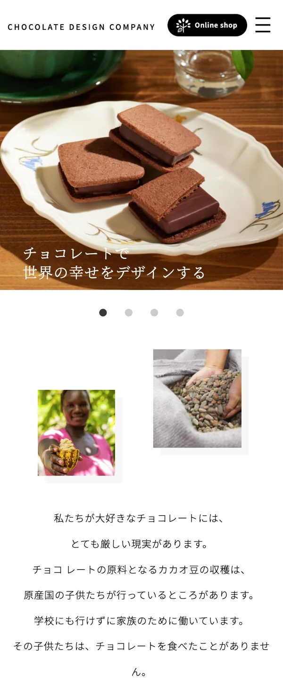

公式 EC サイト内に会社概要ページが存在していたため、ブランド価値や企業としての姿勢をより明確に伝えることを目的に、独立したコーポレートサイトを新規制作しました。
ブランドの世界観を保ちながら、企業理解・採用・信頼形成につながる情報設計を行っています。
一課題
- 会社情報が EC サイト内に点在しており、情報が整理されていなかった
- ブランドの背景や社会貢献活動が十分に伝わっていなかった
- 採用情報への導線が弱く、企業理解につながりにくかった
- 「ブランドとしての信頼感」と「企業としての魅力」を両立した設計が必要だった
二UI 設計
- ブランドイメージを損なわないよう、余白を活かした上質感のあるレイアウトを設計
- 写真やコピーを引き立てるため、視線誘導を意識したシンプルな情報構成を採用
- コーポレートサイト特有の情報量を整理し、ユーザーが迷わず目的ページへ遷移できる導線を設計
- 採用コンテンツでは、企業の想いや働く環境が自然に伝わる構成を意識
- ブランドカラーやタイポグラフィを統一し、世界観と信頼感を両立

三工夫したポイント
- EC サイトとは役割を切り分け、「会社を理解する」ことに特化した情報設計を実施
- ヒストリーや社会貢献活動を掲載することで、単なる商品ブランドではなく「企業としての姿勢」が伝わる構成に
- 採用ページへの導線を整理し、求職者がブランド理解から応募まで自然に進める導線を設計
- ブランドの高級感を損なわないよう、情報量が多くなりすぎないバランスを意識
- ユーザーが直感的に情報を探せるよう、ナビゲーションやページ構成をシンプルに整理